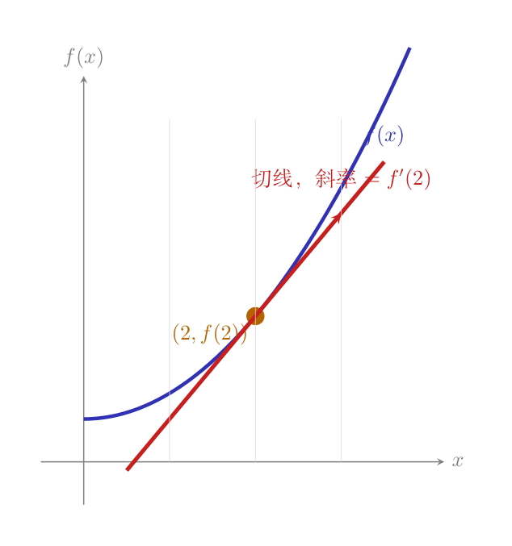

画面： 你开车走盘山公路。仪表盘上的坡度计指着 15°。如果你继续往前开 1 公里，高度大约会上升 $\tan(15°)\times 1\text{km} \approx 270\text{m}$。
导数就是这个「坡度」——在某一点，你往前走一点点，高度变化的速率。
$$f'(x) = \lim_{\epsilon \to 0} \frac{f(x+\epsilon) - f(x)}{\epsilon}$$逐符号拆开：
回到开车的比喻：导数 > 0 = 正在上坡（往前走高度会增加），导数 < 0 = 正在下坡，导数 = 0 = 到了山顶或山谷（坡度为零）。

定义是好，但每次都用极限算太慢了。从定义出发，推几个最常用的规则。
$f(x) = x^2$ 的导数。 代入定义：
$$\begin{aligned} f'(x) &= \lim_{\epsilon \to 0} \frac{(x+\epsilon)^2 - x^2}{\epsilon} \\[4pt] &= \lim_{\epsilon \to 0} \frac{x^2 + 2x\epsilon + \epsilon^2 - x^2}{\epsilon} \\[4pt] &= \lim_{\epsilon \to 0} \frac{2x\epsilon + \epsilon^2}{\epsilon} = \lim_{\epsilon \to 0} (2x + \epsilon) = 2x \end{aligned}$$所以 $(x^2)' = 2x$。每步做了什么：① 展开平方 ② 消掉 $x^2$ ③ 提出 $\epsilon$ 消掉 ④ $\epsilon \to 0$ 时 $\epsilon$ 项消失。
$f(x) = x^n$ 的通式（幂函数求导）： 还是走定义，但这次 $n$ 可以是任意正整数。关键一步是把 $(x+\epsilon)^n$ 展开——这叫二项式展开。别被名字吓到，直接从 $n=3$ 走一遍，再推广。
$(x+\epsilon)^3 = (x+\epsilon)(x+\epsilon)(x+\epsilon)$。老老实实乘开：
$$\begin{aligned} (x+\epsilon)^3 &= (x+\epsilon)(x+\epsilon)(x+\epsilon) \\[4pt] &= (x^2 + 2x\epsilon + \epsilon^2)(x+\epsilon) \\[4pt] &= x^3 + x^2\epsilon + 2x^2\epsilon + 2x\epsilon^2 + x\epsilon^2 + \epsilon^3 \\[4pt] &= x^3 + 3x^2\epsilon + 3x\epsilon^2 + \epsilon^3 \end{aligned}$$整理后四个项：
| 项 | 系数 | $\epsilon$ 的次方 |
|---|---|---|
| $x^3$ | 1 | $\epsilon^0$（没有 $\epsilon$） |
| $3x^2\epsilon$ | 3 | $\epsilon^1$ |
| $3x\epsilon^2$ | 3 | $\epsilon^2$ |
| $\epsilon^3$ | 1 | $\epsilon^3$ |
系数 1, 3, 3, 1——正好是杨辉三角第 3 行。这不是巧合。
先回到 $n=3$，但这次不走代数展开，而是用组合视角——看系数 1, 3, 3, 1 到底从哪来。
把 $(x+\epsilon)^3 = (x+\epsilon)(x+\epsilon)(x+\epsilon)$ 想象成三个并排的盒子：
展开这个乘积，就是要从每个盒子里选一样东西（要么选 $x$，要么选 $\epsilon$），然后把选出来的三个东西乘起来。所有可能的选法：
| 选法 | 盒子1 | 盒子2 | 盒子3 | 乘积 | 几个 ε |
|---|---|---|---|---|---|
| 1 | $x$ | $x$ | $x$ | $x^3$ | 0 |
| 2 | $\epsilon$ | $x$ | $x$ | $x^2\epsilon$ | 1 |
| 3 | $x$ | $\epsilon$ | $x$ | $x^2\epsilon$ | 1 |
| 4 | $x$ | $x$ | $\epsilon$ | $x^2\epsilon$ | 1 |
| 5 | $\epsilon$ | $\epsilon$ | $x$ | $x\epsilon^2$ | 2 |
| 6 | $\epsilon$ | $x$ | $\epsilon$ | $x\epsilon^2$ | 2 |
| 7 | $x$ | $\epsilon$ | $\epsilon$ | $x\epsilon^2$ | 2 |
| 8 | $\epsilon$ | $\epsilon$ | $\epsilon$ | $\epsilon^3$ | 3 |
合并同类项：
杨辉三角第 3 行的 1, 3, 3, 1，本质就是「从 3 个盒子里挑 0、1、2、3 个选 ε」的选法数。
推广到 $n$ 个盒子——$(x+\epsilon)^n$ 是 $n$ 个 $(x+\epsilon)$ 连乘：
每个盒子选 $x$ 或 $\epsilon$，乘起来。按「选了几个 ε」分类：
我们不需要知道挑 2 个、3 个……的系数具体是多少——只需知道它们都带着 $\epsilon^2$ 或更高次方。这在下一步导数计算中会自动消掉。
从 $n$ 个盒子里挑 $k$ 个选 $\epsilon$（其余选 $x$），有几种挑法？这个数记作 $C(n,k)$——读作「n 选 k」。也叫组合数。
杨辉三角就是把所有 $C(n,k)$ 排成三角形——第 $n$ 行第 $k$ 个数就是 $C(n,k)$（行和列都从 0 开始数）：
每行的数 = 上一行相邻两数之和（$1+2=3$，$3+3=6$……）。第 3 行的 1, 3, 3, 1 正好和 $(x+\epsilon)^3$ 展开的系数一致——不是巧合。杨辉三角就是二项式系数的几何版。
二项式定理用组合数写出来就是：
$$(a+b)^n = C(n,0)a^n + C(n,1)a^{n-1}b + C(n,2)a^{n-2}b^2 + \cdots + C(n,n)b^n = \sum_{k=0}^n C(n,k)\\, a^{n-k} b^k$$把 $a=x$，$b=\epsilon$ 代入，就是 $(x+\epsilon)^n = \sum_{k=0}^n C(n,k)\\, x^{n-k} \\epsilon^k$。所以：$C(n,0)=1$（一个 $\epsilon$ 都不选），$C(n,1)=n$（选 1 个 $\epsilon$），$C(n,2)=\frac{n(n-1)}{2}$（选 2 个 $\epsilon$），以此类推。
一行代码验证杨辉三角前三行的系数和上面手算的结果一致：
# 用 Python 的 math.comb 算组合数，验证杨辉三角
# 导入 math 模块——comb(n,k) 就是 C(n,k) = n选k
import math
# n=3 的展开系数：C(3,0), C(3,1), C(3,2), C(3,3)
# 应该等于 [1, 3, 3, 1]——和前面手算的结果一致
coeffs = [math.comb(3, k) for k in range(4)]
print(f"n=3 的系数: {coeffs}") # → [1, 3, 3, 1]
# n=4 的展开系数——杨辉三角第 4 行
coeffs4 = [math.comb(4, k) for k in range(5)]
print(f"n=4 的系数: {coeffs4}") # → [1, 4, 6, 4, 1]
组合数后面会在概率课（二项分布、$C(n,k)p^k(1-p)^{n-k}$）里反复用到——这里的「选盒子」直觉到时候直接复用。
① 展开： $(x+\epsilon)^n = x^n + n x^{n-1}\epsilon + (\text{带 }\epsilon^2\text{ 及更高次的项})$
② 代入差商：
$$\begin{aligned} \frac{f(x+\epsilon) - f(x)}{\epsilon} &= \frac{(x+\epsilon)^n - x^n}{\epsilon} \\[4pt] &= \frac{(x^n + n x^{n-1}\epsilon + \epsilon^2\!\cdot\!(\cdots)) - x^n}{\epsilon} \\[4pt] &= \frac{n x^{n-1}\epsilon + \epsilon^2\!\cdot\!(\cdots)}{\epsilon} \\[4pt] &= n x^{n-1} + \epsilon \!\cdot\! (\cdots) \end{aligned}$$每步做了什么：$x^n$ 和 $-x^n$ 抵消；第一项 $n x^{n-1}\epsilon$ 除以 $\epsilon$ 得到 $n x^{n-1}$（干净！）；后面所有带 $\epsilon^2$ 及更高次的项，除以 $\epsilon$ 后还剩至少一个 $\epsilon$ 因子。
③ 取极限 $\epsilon \to 0$： 所有还带着 $\epsilon$ 的项全部归零——只留下干干净净的 $n x^{n-1}$。
$$\boxed{(x^n)' = n \cdot x^{n-1}}$$用 $n=3$ 验证：$(x^3)' = 3x^2$。用 $n=2$ 验证：$(x^2)' = 2x$——和前面一步步手算的结果一致 ✓。$(x)' = 1 \cdot x^0 = 1$，$(5)' = 0$（常数相当于 $x^0$，导数是 $0 \cdot x^{-1} = 0$——水平线没有坡度）。
为什么分两条？ 从和的规则其实能推出正整数倍——$(2f)' = (f+f)' = f'+f' = 2f'$，$(3f)' = 3f'$，以此类推。但 $c$ 如果是 $\frac{1}{2}$、$\sqrt{2}$、$\pi$，你不能把 $c \cdot f$ 写成「$c$ 个 $f$ 相加」。常数倍规则直接从极限定义来——$c$ 可以提到极限符号外面，对任意实数 $c$ 都成立。两条合在一起说了一件事：求导是线性运算。
这意味着 $(3x^2 + 2x + 5)' = 3 \cdot 2x + 2 \cdot 1 + 0 = 6x + 2$。逐项求导再拼起来就行。
定义里的 $\lim_{\epsilon \to 0}$ 在计算机上没法真正做到——但取一个很小的 $\epsilon$（比如 $10^{-5}$），差商 $\frac{f(x+\epsilon)-f(x)}{\epsilon}$ 会非常接近真实导数。这叫数值微分。
# 00-10 第一步：数值微分——用定义验证 f(x)=x² 的导数 f'(x)=2x
# 导入numpy，别名np（本例主要用于规范，实际未用numpy功能）
import numpy as np
# 定义函数 f(x) = x²
def f(x):
# docstring文档字符串：说明这个函数做什么
"""f(x) = x²"""
# **是幂运算：x**2 = x²，返回x的平方
return x ** 2
# 数值微分函数，参数：函数f、求导点x、微小步长ε（默认10⁻⁵）
def numerical_derivative(f, x, eps=1e-5):
# 用极限定义近似：f'(x) ≈ (f(x+ε)−f(x)) / ε
"""用定义算 f'(x)：取一个很小的 eps，算差商"""
# 前向差商：(f(x+ε)−f(x))/ε，ε越小越精确
return (f(x + eps) - f(x)) / eps
# 在 x=1, 2, 3 处验证——理论值：f'(x) = 2x
# 循环测试3个点：x=1→导数值=2, x=2→4, x=3→6
for x in [1, 2, 3]:
num = numerical_derivative(f, x) # 调用数值微分，传入f和当前x → 数值近似导数
# 理论值：幂函数求导法则 (x²)' = 2x
exact = 2 * x
# f-string: {x}=x值, {num:.6f}=数值结果保留6位, {exact}=理论值, {abs(...):.2e}=误差用科学记数法2位
print(f"f'({x}) 数值={num:.6f} 理论={exact} 误差={abs(num-exact):.2e}")
误差约 $10^{-5}$——和 $\epsilon$ 同一量级。定义不是空洞的，是能在计算机上跑通的。
如果函数有两个输入 $f(x,y)$——就像开车同时有油门和方向盘。偏导数就是问：「我只踩油门（$x$ 变），方向盘不动（$y$ 不变），高度变化多快？」
$$\frac{\partial f}{\partial x} = \lim_{\epsilon \to 0} \frac{f(x+\epsilon, y) - f(x, y)}{\epsilon}$$
$\partial$（读作 "round d"）这个符号只是提醒你：不止一个变量，但我现在只看这一个。
偏导数的计算规则——简单到离谱： 对 $x$ 求偏导时，把 $y$ 当成常数就行（就像把 $y$ 当成数字 5）。
例子：$f(x,y) = x^2 + 3xy + y^3$。
# 00-10 第二步：偏导数数值计算——验证 ∂f/∂x 和 ∂f/∂y
# 导入numpy，别名np
import numpy as np
# 定义二元函数 g(x,y) = x² + 3xy + y³
def g(x, y):
# docstring：说明函数公式
"""f(x,y) = x² + 3xy + y³"""
# x**2=x², 3*x*y=3xy, y**3=y³
return x**2 + 3*x*y + y**3
# 对x的偏导数：f是原函数，x,y是求导点，eps=微小步长ε
def partial_x(f, x, y, eps=1e-5):
# 偏导数定义：∂f/∂x = lim_{ε→0} (f(x+ε,y)−f(x,y))/ε
"""对 x 的偏导：只动 x，y 不动"""
# 只改变x（加ε），y保持不变 → 数值近似偏导
return (f(x + eps, y) - f(x, y)) / eps
# 对y的偏导数
def partial_y(f, x, y, eps=1e-5):
# 偏导数定义：∂f/∂y = lim_{ε→0} (f(x,y+ε)−f(x,y))/ε
"""对 y 的偏导：只动 y，x 不动"""
# 只改变y（加ε），x保持不变 → 数值近似偏导
return (f(x, y + eps) - f(x, y)) / eps
# 在点 (2, 3) 验证——把x₀=2, y₀=3代入偏导公式
# 测试点：x₀=2.0, y₀=3.0（浮点数）
x0, y0 = 2.0, 3.0
# 理论：∂f/∂x = 2x + 3y（对x求偏导，y当常数）→ 2*2 + 3*3 = 4+9 = 13
# 理论：∂f/∂y = 3x + 3y²（对y求偏导，x当常数）→ 3*2 + 3*9 = 6+27 = 33
px_num = partial_x(g, x0, y0) # 数值计算 ∂g/∂x 在 (2,3) 的值 → 应≈13.0
py_num = partial_y(g, x0, y0) # 数值计算 ∂g/∂y 在 (2,3) 的值 → 应≈33.0
# :.6f=保留6位小数，误差约10⁻⁵量级
print(f"∂f/∂x 数值={px_num:.6f} 理论=13")
# 数值结果和理论值非常接近
print(f"∂f/∂y 数值={py_num:.6f} 理论=33")
把 $y$ 当成常数——这个规则不是死记的，是「只动 $x$，$y$ 不动」这个定义的直接结果。
偏导数一个个算完之后，把它们装进一个向量里——这就是梯度：
$$\nabla f = \begin{bmatrix} \frac{\partial f}{\partial x} \\[4pt] \frac{\partial f}{\partial y} \end{bmatrix}$$对 $f(x,y) = x^2 + 3xy + y^3$，梯度 = $\begin{bmatrix} 2x+3y \\ 3x+3y^2 \end{bmatrix}$。
在点 $(2,3)$ 处，梯度 = $\begin{bmatrix} 13 \\ 33 \end{bmatrix}$。
梯度的几何含义是下一课（00-11）的主题——这里先知道它就是把所有偏导打包成一个向量。